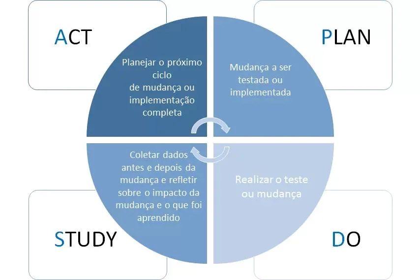

Patrícia Mitsue Saruhashi Shimabukuro1, Fabiana Traldi Terzian2, Raissa Meire Val3, Gilmar Pereira Coan4
2. Diretora estratégica da DG Medicina Perioperatória. São Paulo SP
3. Médica. Coordenadora médica da DG Medicina Perioperatória. São Paulo SP
4. Médico. Coordenador da DG Medicina Perioperatória. São Paulo SP
Sobre esta publicação
Artigo original publicado na Revista de Administração em Saúde (Rev. Adm. Saúde, On-line), São Paulo, v. 24, n. 95: e381, abr.–jun. 2024. Epub 26 jun. 2024. Reproduzido integralmente no Cuidar Seguro sob licença Creative Commons Attribution (CC BY), com a devida atribuição aos autores.
Acessar o artigo original (DOI: 10.23973/ras.95.381)Resumo
Introdução: A qualidade do cuidado em saúde é composta por diversos atributos, como eficiência, eficácia e efetividade visando a otimização, melhoria contínua e melhor performance dos serviços de saúde. Diante deste cenário, o ciclo Plan, Check, Do, Study, Action (PDSA) é baseada no conhecimento científico de forma a visualizar os resultados obtidos. Neste cenário, justifica-se a utilização desta ferramenta para implantação do serviço de anestesiologia em serviços de saúde. Objetivo: demonstrar a importância do uso da ferramenta PDSA durante a implantação do serviço de anestesiologia em um hospital parceiro. Método: estudo transversal e prospectivo demonstrando a importância da escolha da ferramenta da qualidade PDSA para a implantação do serviço de anestesiologia em um hospital privado localizado no município de São Paulo no período de janeiro a maio de 2024, foi realizada uma visita diagnóstica no serviço de saúde para a realização do levantamento das necessidades de um serviço de anestesiologia, elaborado um relatório gerencial para a alta direção elencando as principais necessidades para o funcionamento adequado do serviço de anestesiologia. Resultados e discussão: Com esta avaliação sistematizada e mensal dos itens elencados na fase diagnóstica de implantação, foram observados 29 itens a serem trabalhados na instituição, sendo dividido em 2 fases de monitoramento, a primeira a implantação e a segunda execução. No primeiro mês, no contexto da fase de implantação, dos 29 itens mencionados, tivemos 9 (31%) itens concluídos, 20 (69%) itens em planejamento/andamento. No segundo mês, dos 20 itens que estavam em execução, 5 (25%) foram considerados concluídos e 15 (75%) itens em andamento/planejamento. No terceiro mês, dos 15 itens em andamento, 3 (20%) foram considerados concluídos, e 12 (80%) são considerados em andamento/planejamento. Considerações finais: para que o ciclo PDSA seja eficaz, é preciso que os profissionais envolvidos no processo tenham a cultura da melhoria contínua com uma liderança comprometida, apoio institucional e mentalidade aberta às mudanças para que a abordagem sistemática possa ser embasada em evidências científicas, promovendo uma prática mais segura, eficiente e centrada no paciente.
Palavras-chave: Anestesiologia, Gestão em Saúde, Melhoria de qualidade, Segurança do Paciente, Serviços de Saúde.
Abstract
Introduction: The quality of health care is made up of several attributes, such as efficiency, effectiveness and effectiveness aiming at optimization, continuous improvement and better performance of health services. Given this scenario, the Plan, Check, Do, Study, Action (PDSA) cycle is based on scientific knowledge in order to visualize the results obtained. In this scenario, the use of this tool to implement anesthesiology services in health services is justified. Objective: demonstrate the importance of using the PDSA tool during the implementation of the anesthesiology service in a partner hospital. Method: cross-sectional and prospective study demonstrating the importance of choosing the PDSA quality tool for implementing the anesthesiology service in a private hospital located in the city of São Paulo from January to May 2024, a diagnostic visit was carried out at the anesthesiology service health to carry out a survey of the needs of an anesthesiology service, preparing a management report for senior management listing the main needs for the proper functioning of the anesthesiology service. Results and discussion: With this systematic and monthly evaluation of the items listed in the diagnostic phase of implementation, 29 items were observed to be worked on in the institution, being divided into 2 monitoring phases, the first implementation and the second execution. In the first month, in the context of the implementation phase, of the 29 items mentioned, we had 9 (31%) items completed, 20 (69%) items in planning/progress. In the second month of the 20 items that were being executed, 5 (25%) were considered completed and 15 (75%) items were in progress/planning. In the third month of the 15 items in progress, 3 (20%) were considered completed, and 12 (80%) were considered in progress/planning. Final considerations: for the PDSA cycle to be effective, the professionals involved in the process must have a culture of continuous improvement with committed leadership, institutional support and a mindset open to change so that the systematic approach can be based on scientific evidence, promoting a safer, more efficient and patient-centered practice.
Keywords: Anesthesiology, Health Management, Health service, Quality improvment, Safety patient.
Introdução
Qualidade é um sistema complexo e altamente exigido nas organizações de saúde devido a necessidade de as empresas estarem alinhadas com a efetividade e eficácia da prestação do serviço prestado às pessoas que procuram a instituição de saúde (RAFFA; BARRETO, 2023).
A qualidade do cuidado em saúde é composta por diversos atributos, como a eficácia, a efetividade, a eficiência, a otimização, a aceitabilidade, a legitimidade e a equidade. Estes atributos são avaliados de maneira isolada ou combinada de acordo com a magnitude proposta pela instituição de saúde (ANVISA, 2017).
Deming pregava que a qualidade é um sistema de melhoria contínua que visa melhoria de processos e pessoas através de princípios da busca de satisfação para clientes, colaboradores da instituição, fornecedores e acionistas. As atividades realizadas nos serviços de saúde são simultâneas e podem construir uma base para a transição da qualidade em todo o sistema (WHO, 2020; IHI, 2021).
Dentro do sistema de qualidade existem várias ferramentas a serem utilizadas para instrumentalizar e demonstrar a importância em um serviço de saúde. A ferramenta a ser utilizada neste estudo é o Plan, Check, Do, Study, Action (PDSA), baseada em gerar conhecimento científico, e propõe o estudo como forma de obtenção dos resultados baseados em evidências como demonstrado na figura 1.

Na etapa Plan é necessário a realização do diagnóstico institucional, elaborando relatórios e propondo soluções. Na etapa Do é realizada a implementação das soluções propostas como fase de teste. Na etapa Study realizar o comparativo do antes e depois das implementações comparando os dados e visualizando oportunidades de melhoria. Na etapa Act é o momento de realizar os ajustes necessários, treinar a equipe e realizar a melhoria proposta de maneira efetiva (SANTOS, LANZONI, ERDMANN, 2023).
Os resultados esperados com foco na qualidade e segurança é uma necessidade do centro cirúrgico e envolve todo o processo da medicina perioperatória. Com a crescente pressão financeira e econômica para realizar o atendimento com eficiência, eficácia e menor custo com menor tempo de hospitalização é uma das principais necessidades dos serviços de saúde e torna-se um grande desafio para os gestores (SAESP, 2024).
No contexto atual, as instituições de saúde, visam a otimização perioperatória como forma de identificar melhorias nos processos previamente implantados propondo assertividade nos procedimentos cirúrgicos, anestésicos, garantindo a segurança do paciente e minimizando o seu tempo de internação no serviço de saúde (RAFFA; BARRETO, 2023; SAESP, 2024).
Desta forma, justifica-se a utilização desta ferramenta como forma de visualizar momentos e situações de extrema relevância durante o processo de implantação do serviço de anestesiologia.
Objetivo
Demonstrar a importância do uso da ferramenta PDSA durante a implantação do serviço de anestesiologia em um hospital parceiro.
Método
Este é um estudo transversal e prospectivo demonstrando a importância da escolha da ferramenta da qualidade PDSA para a implantação do serviço de anestesiologia em um hospital privado localizado no município de São Paulo.
O período da realização do estudo foi de janeiro a maio de 2024, foi realizada uma visita diagnóstica no serviço de saúde para a realização do levantamento das necessidades de um serviço de anestesiologia, elaborado um relatório gerencial para a alta direção. Elencadas as prioridades de atuação para o bom funcionamento do serviço, visando qualidade e eficiência nos processos anestésicos. As prioridades elencadas estão relacionadas a recursos humanos, equipamentos e materiais. Estabelecimento de metas para a elaboração e efetivação do item a ser desenvolvido ou adequado.
São realizadas reuniões semanais para alinhamento estratégico e direcionamento das ações, bem como atualização do status de implantação do serviço, o que ajuda na avaliação dos processos e possibilita a visualização da melhoria proposta.
Para os critérios de inclusão foram avaliados os setores centro cirúrgico (CC), centro obstétrico (CO) e serviço de apoio e diagnóstico terapêutico (SADT) conforme acordado em contrato de prestação de serviço com a instituição de saúde.
Como critérios de exclusão, são os setores onde não há atualização do médico anestesiologista na instituição de saúde, conforme contrato de prestação de serviços.
Este trabalho foi submetido ao comitê de ética, garantindo o sigilo total e o anonimato dos participantes conforme estabelecido na Resolução nº 466/2012.
Resultados e discussão
Para a aplicação da ferramenta da qualidade PDSA, foi realizado a seguinte aplicação conforme demonstrado no Quadro 1.
| Etapa da ferramenta | Definição | Aplicabilidade prática |
|---|---|---|
| P (Plan) | Mudança a ser implementada ou realizada | Visita técnica, elaboração do relatório, diagnóstico da avaliação e planejamento das ações a serem realizadas, análise das intervenções possíveis e que neste momento não geram custo para à instituição de saúde e o tipo de abordagem a ser realizada para alcance dos resultados esperados. |
| D (Do) | Realizar a tarefa a ser implementada | Reuniões semanais com a alta direção, contratação de profissionais para composição do quadro de recursos humanos, elaboração de indicadores, protocolos e demais necessidades observadas durante o processo de implantação. |
| S (Study) | Realização da coleta de dados, avaliar os impactos da aprovação. | Coleta de dados para elaboração dos indicadores, emissão de relatórios sobre intercorrências anestésicas, classificação ASA, mapa de calor sobre os principais dias das semanas com maior volumetria cirúrgica, observar através do mapa de calor os horários de maior volumetria cirúrgica para dimensionamento adequado da equipe de anestesiologia. |
| A (Action) | Planejamento do próximo ciclo ou implementação do processo. | Divulgação para a equipe das melhorias realizadas através de reuniões com os coordenadores médicos, treinamentos de acordo com a necessidade observada no serviço, elaboração de informe online em aplicativo de mensagem instantânea a todo o corpo clínico da instituição e alinhamento das condutas a serem realizadas no serviço de saúde. |
A mudança cultural e de processo de uma instituição de saúde deve ser produtiva e perene para que as melhorias sejam implementadas de maneira contínua. A implementação das melhorias de processo só pode ser obtida através de avaliação por um determinado período, de forma a gerar uma conscientização nas pessoas sobre a importância da manutenção da proposta de melhoria para a instituição de saúde (VIDAL JUNIOR, 2023; SANTOS, LANZONI, ERDMANN, 2023).
Para aplicação desta ferramenta é preciso responder às seguintes perguntas (OVRETREIT, 2015; KURCGANT, 2016):
- Por que este processo foi selecionado?
- Este processo está funcionando de maneira adequada?
- O que os clientes que utilizam o serviço de anestesiologia estão dizendo?
- O que os clientes precisam e não estão recebendo da anestesiologia?
- O que os clientes estão recebendo da anestesiologia e não precisam neste momento?
- Quais os dados devem ser coletados (desperdícios, erros, retrabalho, tempo do ciclo, dentre outros)?
Com esta avaliação sistematizada e avaliação mensal dos itens elencados na fase diagnóstica de implantação, foram observados 29 itens a serem trabalhados na instituição, sendo dividido em 2 fases de monitoramento, a primeira a implantação e a segunda execução.
No primeiro mês, no contexto da fase de implantação, dos 29 itens mencionados, tivemos 9 (31%) itens concluídos, 20 (69%) itens em planejamento/andamento.
No segundo mês, dos 20 itens que estavam em execução, 5 (25%) foram considerados concluídos e 15 (75%) itens em andamento/planejamento.
No terceiro mês, dos 15 itens em andamento, 3 (20%) foram considerados concluídos, e 12 (80%) são considerados em andamento/planejamento.
Desta forma, esta ferramenta ajuda no planejamento estratégico da equipe de anestesiologia através de um pensamento sistêmico estruturado para que os objetivos sejam alcançados de maneira adequada e de acordo com o amadurecimento da instituição de saúde. O serviço de saúde entende que o centro cirúrgico pode ser considerado como um negócio e ajuda no direcionamento dos recursos financeiros (GODILHO, 2018; IHI, 2021).
Considerações finais
Diante do apresentado, a aplicação do ciclo PDSA na anestesiologia pode gerar vários benefícios tangíveis, melhorando os resultados clínicos para os pacientes, reduzindo as complicações perioperatórias, utilização eficiente dos recursos hospitalares e maior satisfação da equipe multiprofissional.
Para que o ciclo PDSA seja eficaz, é preciso que os profissionais envolvidos no processo tenham a cultura da melhoria contínua com uma liderança comprometida, apoio institucional e mentalidade aberta às mudanças.
Desta forma, o ciclo PDSA oferece uma estrutura sólida para implementação de melhorias significativas além de uma abordagem sistemática, embasada em evidências científicas e promovendo prática mais segura, eficiente e centrada no paciente.
Por que este estudo importa para a segurança do paciente
- Melhoria contínua tem método: o PDSA transforma boas intenções em um ciclo verificável de planejar, testar, estudar e agir.
- Diagnóstico antes da ação: os 29 itens só emergiram porque houve visita técnica e relatório gerencial — não se corrige o que não foi mapeado.
- Medir a implantação, não só o desfecho: acompanhar mensalmente quantos itens foram concluídos torna visível o ritmo real da mudança.
- Dados que orientam escala de equipe: mapas de calor de volumetria cirúrgica ligam gestão de pessoal diretamente à segurança do ato anestésico.
- Cultura e liderança são pré-requisitos: sem apoio institucional e abertura à mudança, a ferramenta vira formalidade sem efeito.
Referências
- Agência Nacional de Vigilância Sanitária (ANVISA). Assistência segura: uma reflexão teórica aplicada à prática. Brasília. 2017.
- Godilho, R. Maturidade de gestão hospitalar e transformação digital. Ledriprint editora. São Paulo. 2018.
- Institute Healthcare Improvement (IHI). Qualidade de todo sistema. Boston. 2021.
- Kurcgant P. Gerenciamento em enfermagem. Guanabara Koogan. Rio de Janeiro. 2016.
- Ovretveit J. Melhoria da qualidade que agrega valor: o cuidado da saúde. Rio de Janeiro. 2015.
- Raffa C, Barreto S. Qualidade em gestão de saúde. Centro Universitário São Camilo. São Paulo. 2023.
- Santos JLG; Lanzoni GMM; Erdmann AL. Gestão em enfermagem. Ponta Grossa. Athena Editora. 2023.
- Sociedade de Anestesiologia do Estado de São Paulo (SAESP). Gestão em anestesia. Manole. São Paulo. 2024.
- Toledo LV (org). Gerenciamento de serviços de saúde e enfermagem. Ponta Grossa. Athena editora. 2021.
- Vidal Junior, GC. Modelo de Deming e Ciclo PDSA: Alcançando resultados, gerando conhecimento e incrementando a qualidade. REPEGE. 6(1):e32482. 2023.
- World Health Organization (WHO). Quality health services: a planning guide. Genebra. 2020.
Recebido: 16 de maio de 2024. Aceito: 26 de junho de 2024.
Correspondência: Patrícia Mitsue Saruhashi Shimabukuro. E-mail: ccihitaim@gmail.com
Conflito de interesses: os autores declararam não haver conflito de interesses.
Como citar: Shimabukuro PMS, Terzian FT, Val RM, Coan GP. Utilização da ferramenta PDSA para implantação de um serviço de anestesiologia. Rev. Adm. Saúde (On-line). 2024;24(95):e381. http://dx.doi.org/10.23973/ras.95.381
© Este é um artigo de acesso aberto distribuído sob os termos da Licença Creative Commons Attribution (CC BY), que permite uso, distribuição e reprodução irrestritos em qualquer meio, desde que o trabalho original seja devidamente citado.